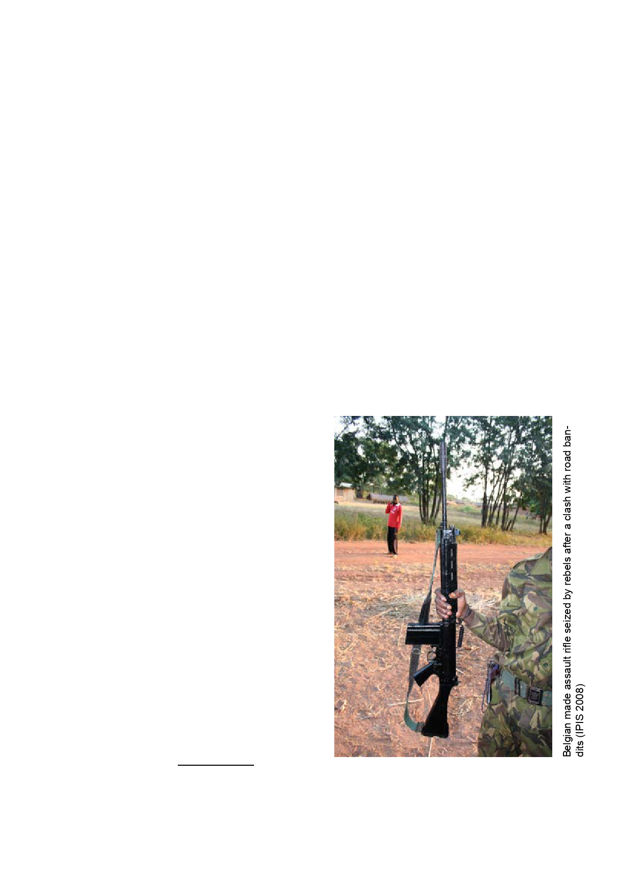

Rebels
forces and police services each have their own French technical advisors
seconded to them. The European Union is strongly involved too.
The goals of the SSR are rather ambitious and although they might be
logistically feasible, the necessary funding has not yet been found. The
main impact of the SSR on the FACA will be the following20:
• In 2010 one third of the current army should be renewed.
• On top of the current 5000 soldiers, 2500 additional personnel should
be recruited.
• New recruitment should follow an ethnic/regional distribution code.
• Arrears need to be paid.
• The FACA have to be removed from the centre of Bangui as much
as possible. They need to be posted throughout the territory. 20 army
barracks have to be built in the interior and each should be manned by
one company (120-150 men)21.
The FACA have a deplorable human rights record and a bad reputation.
Between 2005 and 2007, the Central African security forces have built up
notoriety among Central Africans for burning down entire series of villages
and summarily executing civilians during ‘counter-rebellion operations’. In
an elaborate report of September 2007, Human Rights Watch has identified
them clearly as the biggest human rights violators in the CAR22. According
to the same report the worst malefactor in that period was a unit of the
Presidential Guard led by Eugène Ngaïkossé, the same officer that now
commands the CPR.
Other
The principal warring
parties in the CAR were
discussed above. Below,
some other armed groups
with a significant impact on
the security situation are
discussed.
FDPC
The
FDPC
(Front
Démocratique du Peuple
Centrafricain, Democratic
Front of the Central African
People) is the third rebel
movement that controls part
of the CAR’s territory, though
only a very small area.
Until 11 November 2008, it
seemed that the FDPC had
ceased to exist as an active
20 Interview by IPIS with EU military advisor in Bangui, conducted in November 2008.
21 Four of such barracks already exist in Bozoum, Kaga-Bandoro, Paoua and Bria. A fifth is currently
being constructed in Ndélé. Apart from the barracks in Bria, the other bases are currently occupied by
MICOPAX forces.
22 Human Rights Watch, State of Anarchy. Rebellion and Abuses against Civilians, HRW Report,
September 2007, 108 p. All other international sources concur on this issue.
13